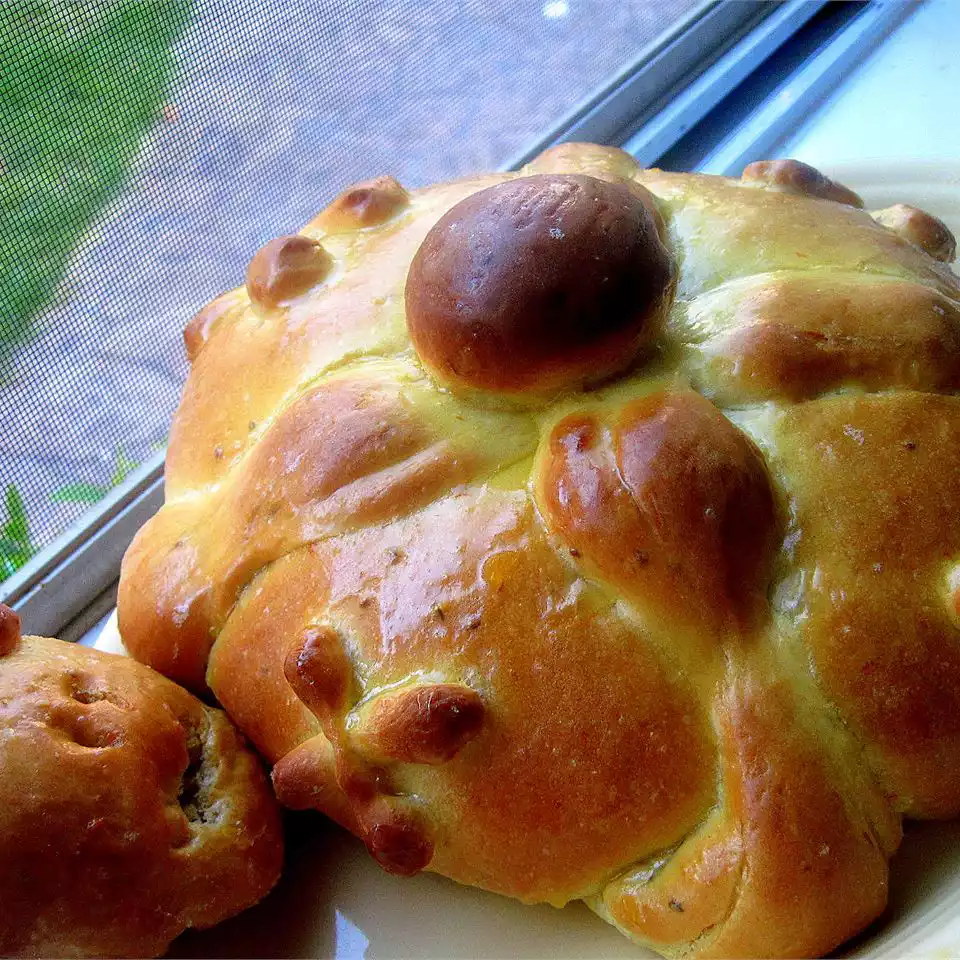

overview
- Make the bread dough.
- Turn the dough out onto a floured surface and knead until smooth and elastic.
- Cover and let rise in a warm place until doubled in size.
- Punch the dough down and shape into a large round loaf with a round knob on top.
- Place on a baking sheet, loosely cover, and let rise again in a warm place.
- Bake until golden brown.
- Make the glaze, then glaze the cooled bread.
ingredients
- ¼ cup milk
- ¼ cup butter
- ¼ cup warm water (110 degrees F/45 degrees C)
- 3 cups all-purpose flour
- ¼ cup white sugar
- 2 teaspoons anise seed
- 1 ¼ teaspoons active dry yeast
- ½ teaspoon salt
- 1 teaspoon vanilla extract
- 2 large eggs, beaten
- 1 tablespoon orange zest
how to do it
-
Step 1
- Gather the ingredients.
-
Step 2
- To make the bread: Heat milk and butter in a medium saucepan over low heat until butter melts. Remove from
heat and add warm water. Mixture should be around 110 degrees F (43 degrees C).
-
Step 3
- Combine 1 cup flour, sugar, anise seed, yeast, and salt in a large bowl. Beat in warm milk mixture, then add
eggs and orange zest; beat until well combined. Stir in 1/2 cup flour and continue adding more flour until
dough is soft.
-
Step 4
- Turn dough out onto a lightly floured surface; knead until smooth and elastic. Place dough into a lightly
greased bowl. Cover with plastic wrap and let rise in a warm place until doubled in size, 1 to 2 hours.
-
Step 5
- Punch dough down and shape into a large round loaf with a round knob on top. Place dough onto a baking
sheet; loosely cover with plastic wrap. Let rise in a warm place until just about doubled in size, about 1
hour.
-
Step 6
- Preheat the oven to 350 degrees F (175 degrees C). Bake in the preheated oven until golden brown, 35 to 45
minutes. Cool slightly before brushing with glaze.
-
Step 7
-
To make the glaze: Combine 1/4 cup sugar, orange juice, and orange zest in a small saucepan. Bring to a boil
over medium heat and boil for 2 minutes.
-
Step 8
- Brush glaze over top of warm bread. Sprinkle with 2 tablespoons sugar.